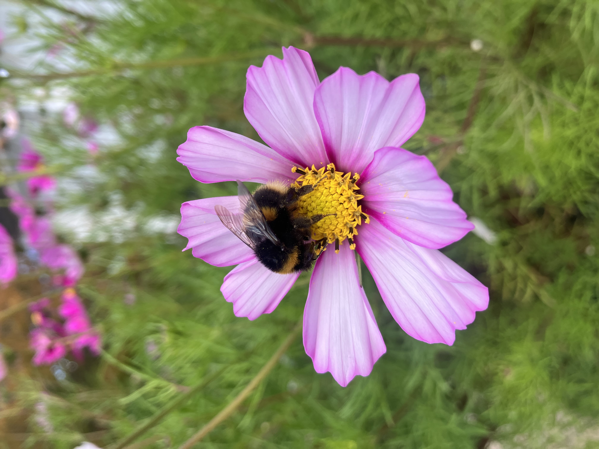

Why act now
Nature is under pressure. Many native insects are declining as habitats shrink and chemicals increase. Without them, we risk losing pollination, healthy soils, and the food systems we rely on.
Nature feeds us
Pollinators support fruit, veg, and seed production, keep soils alive, and help ecosystems function.
It’s disappearing
Habitat loss and spraying break the links insects need to survive and recover.
Good news
Native planting, less spraying, and smarter mowing bring insects back—fast.
“Big, system-level change is needed—but local action matters.”
Why insects matter in Aotearoa
Pollination = kai
Bees, flies, moths, beetles—and birds—help produce food in gardens and orchards. Protecting them protects our kai.
Uniquely New Zealand
Aotearoa has thousands of endemic insects that evolved with native plants. Planting native reconnects those relationships.
Beyond just bees
Hoverflies, native solitary bees, and night-flying moths play quiet but vital roles—especially when flowers are available through the seasons.
Everything connects
Insects feed birds and fish, recycle nutrients, and build healthy soils. Give them flowers, nesting spots, and chemical-free space.
Let Nature Grow — the Aotearoa way
Focus on native plants and simple changes. Here’s what works best in New Zealand:
1) Grow native, not just “wild”
Choose species that feed and shelter our insects:
- Hebe (koromiko) — nectar for native bees & hoverflies
- Mānuka & kānuka — early-season nectar & nesting structure
- Harakeke (NZ flax) — rich nectar for many insects
- Olearia — supports night-flying moths
- Pittosporum tenuifolium — shelter & food for caterpillars
Mix tussocks, shrubs, and trees for year-round support.
2) Mow less, and at the right times
- Cut grass only 2–3 times a year.
- Never mow everything at once—leave refuge patches.
- Avoid mowing Oct–Jan (peak insect season).
- Keep some strips or corners wild permanently if possible.
3) Stop spraying
Even “eco” sprays harm native insects.
- Skip pesticides and herbicides altogether.
- Weed by hand, use mulch, or plant densely to shade out weeds.
4) Make space for shelter
- Leave some leaf litter, twigs, and logs.
- Create brush piles or stone stacks for nesting.
- Let a few corners stay untidy and wild.
5) Think in layers
- Tussocks & carex for cover
- Shrubs (coprosma, hebe) for nectar
- Trees (kōwhai, mānuka, ribbonwood) for height & diversity
6) Join local efforts
Restoration is stronger together.
- Forest & Bird branches
- Local council biodiversity programmes
- Iwi-led restoration projects
- Wildlife & Ecology NZ
Benefits of letting nature grow
Food security
Pollinators keep gardens and orchards productive. Chemical-free soils thrive.
Wellbeing
Green streets reduce stress, lift mood, and invite play and walking.
Climate resilience
Native plantings cool cities, soak up water, and reduce flooding.
Beauty
Birdsong, butterflies, and blooming natives make daily life richer.
Learning
Kids discover ecosystems, pollination, and kaitiakitanga.
Stronger ecosystems
Connected patches help wildlife survive and adapt.
Photos




What “No Flowers = No Food” means here
- Plant native first. Prioritise local species that evolved with our insects.
- Use mosaic mowing. Different patches, different timings—never all at once.
- Keep edges tidy. A mown border, path, or sign shows it’s intentional and cared for.
- Leave structure. Logs, brush, and leaf litter are homes—don’t “tidy” them away.
- Go chemical-free. Hand-weed, mulch, and plant densely instead.
New Zealand resources
Do
- Join a local Forest & Bird branch
- Ask council about mosaic mowing pilots
- Support iwi-led restoration projects
Common questions
Can I just mow as usual?
Regular mowing removes flowers and structure insects need. Leave corners to bloom and mow different areas at different times.
Do native flowers really help?
Yes. Native plants evolved with our insects and provide the most useful nectar, pollen, and habitat.
Will long grass look messy?
Frame wild areas with a tidy edge or path, add a small sign, and use flowering natives. People read it as intentional.
Are “weeds” like clover okay?
They can provide nectar, but prioritise natives for the best outcomes. Hand-weed invasives and skip spraying.
What about allergies or safety?
Choose lower-allergen species and keep sightlines open near driveways. In public spaces, add simple signage and keep edges clear.
My council has fixed mowing schedules—what now?
Ask for a trial of mosaic mowing, seasonal flowering windows, and reduced-spray zones. Offer to monitor results with photos.